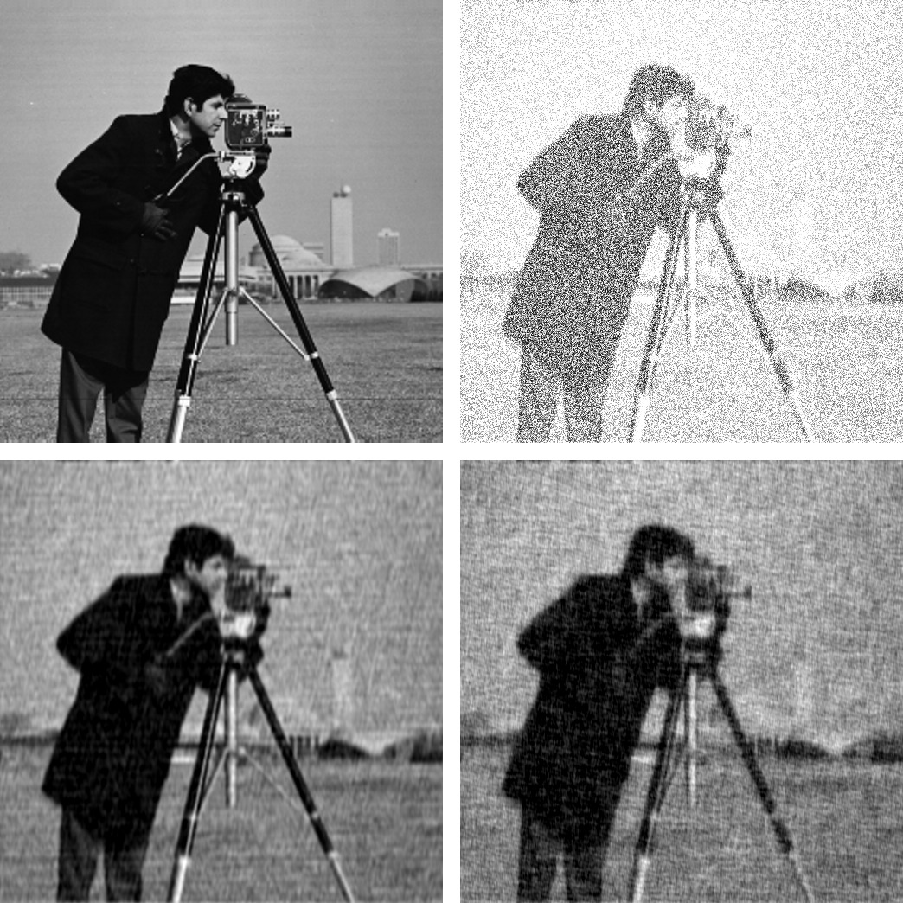

Deconvolution.jl
Introduction
Deconvolution.jl provides a set of functions to deconvolve digital signals, like images or time series. This is written in Julia, a modern high-level, high-performance dynamic programming language designed for technical computing.
Installation
The latest version of Deconvolution.jl is available for Julia 1.0 and later versions, and can be installed with Julia built-in package manager. In a Julia session, after entering the package manager mode with ], run the command
pkg> add DeconvolutionOlder versions are also available for Julia 0.4-0.7.
Usage
Currently Deconvolution.jl provides only two methods, but others will hopefully come in the future.
wiener function
The Wiener deconvolution attempts at reducing the noise in a digital signal by suppressing frequencies with low signal-to-noise ratio. The signal is assumed to be degraded by additive noise and a shift-invariant blurring function.
Theoretically, the Wiener deconvolution method requires the knowledge of the original signal, the blurring function, and the noise. However, these conditions are difficult to met (and, of course, if you know the original signal you do not need to perform a deconvolution in order to recover the signal itself), but a strength of the Wiener deconvolution is that it works in the frequency domain, so you only need to know with good precision the power spectra of the signal and the noise. In addition, most signals of the same class have fairly similar power spectra and the Wiener filter is insensitive to small variations in the original signal power spectrum. For these reasons, it is possible to estimate the original signal power spectrum using a representative of the class of signals being filtered.
For a short review of the Wiener deconvolution method see http://www.dmf.unisalento.it/~giordano/allow_listing/wiener.pdf and references therein.
The wiener function can be used to apply the Wiener deconvolution method to a digital signal. The arguments are:
input: the digital signalsignal: the original signal (or a signal with a likely similar power spectrum)noise: the noise of the signal (or a noise with a likely similar power spectrum)blurring(optional argument): the blurring kernel
All arguments must be arrays, all with the same size, and all of them in the time/space domain (they will be converted to the frequency domain internally using fft function). Argument noise can be also a real number, in which case a constant noise with that value will be assumed (this is a good approximation in the case of white noise).
lucy function
The Richardson-Lucy deconvolution is an iterative method based on Bayesian inference for restoration of signal that is convolved with a point spread function.
The lucy function can be used to apply the Richardson-Lucy deconvolution method to a digital signal. The arguments are:
observed: the digital signalpsf: the point spread functioniterations(optional argument): the number of iterations
First two arguments must be arrays, all with the same size, and all of them in the time/space domain (they will be converted to the frequency domain internally using fft function). Argument iterations is an integer number. The more iterations is specified the better result should be if the solution converges and it is going to converge if PSF is estimated well.
Examples
Wiener deconvolution
Noisy time series
This is an example of application of the Wiener deconvolution to a time series.
We first construct the noisy signal:
using LombScargle, Deconvolution, Plots
t = linspace(0, 10, 1000) # observation times
x = sinpi(t) .* cos.(5t) .- 1.5cospi.(t) .* sin.(2t) # the original signal
n = rand(length(x)) # noise to be added
y = x + 3(n - mean(n)) # observed noisy signalIn order to perform the Wiener deconvolution, we need a signal that has a power spectrum similar to that of the original signal. We can use the Lomb–Scargle periodogram to find out the dominant frequencies in the observed signal, as implemented in the the Julia package LombScargle.jl.
# Lomb-Scargle periodogram
p = lombscargle(t, y, maximum_frequency=2, samples_per_peak=10)
plot(freqpower(p)...)After plotting the periodogram you notice that it has three peaks, one in each of the following intervals: $[0, 0.5]$, $[0.5, 1]$, $[1, 1.5]$. Use the LombScargle.model function to create the best-fitting Lomb–Scargle model at the three best frequencies, that can be found with the findmaxfreq function (see the manual at http://lombscarglejl.readthedocs.io/ for more details):
m1 = LombScargle.model(t, y, findmaxfreq(p, [0, 0.5])[1]) # first model
m2 = LombScargle.model(t, y, findmaxfreq(p, [0.5, 1])[1]) # second model
m3 = LombScargle.model(t, y, findmaxfreq(p, [1, 1.5])[1]) # third modelOnce you have these three frequencies, you can deconvolve y by feeding wiener with a simple signal that is the sum of these three models:
signal = m1 + m2 + m3 # signal for `wiener`
noise = rand(length(y)) # noise for `wiener`
polished = wiener(y, signal, noise)
# Compare...
plot(t, x, size=(900, 600), label="Original signal", linewidth=2)
plot!(t, y, label="Observed signal") # ...original and observed signal
plot(t, x, size=(900, 600), label="Original signal", linewidth=2)
plot!(t, polished, label="Recovered with Wiener") # ...original and recovered signal
plot!(t, signal, label="Lomb–Scargle model") #...and best fitting Lomb–Scargle model

Note that the signal recovered with the Wiener deconvolution is generally a good improvement with respect to the best-fitting Lomb–Scargle model obtained using a few frequencies.
With real-world data the Lomb–Scargle periodogram may not work as good as in this toy-example, but we showed a possible strategy to create a suitable signal to use with wiener function.
Blurred image
Here is an example of use of wiener function to perform the Wiener deconvolution of an image, degraded with a blurring function and an additive noise.
using Images, TestImages, Deconvolution, ImageView
# Open the test image
img = float(data(testimage("cameraman")))'
# Create the blurring kernel in frequency domain
x = hcat(ntuple(x -> collect((1:512) - 257), 512)...)
k = 0.001
blurring_ft = exp.(-k*(x .^ 2 + x' .^ 2).^(5//6))
# Create additive noise
noise = rand(size(img))
# Fourier transform of the blurred image, with additive noise
blurred_img_ft = fftshift(blurring_ft) .* fft(img) + fft(noise)
# Get the blurred image from its Fourier transform
blurred_img = real(ifft(blurred_img_ft))
# Get the blurring kernel in the space domain
blurring = ifft(fftshift(blurring_ft))
# Polish the image with Deconvolution deconvolution
polished = wiener(blurred_img, img, noise, blurring)
# Wiener deconvolution works also when you don't have the real image and noise,
# that is the most common and useful case. This happens because the Wiener
# filter only cares about the power spectrum of the signal and the noise, so you
# don't need to have the exact signal and noise but something with a similar
# power spectrum.
img2 = float(data(testimage("livingroom"))) # Load another image
noise2 = rand(size(img)) # Create another additive noise
# Polish the image with Deconvolution deconvolution
polished2 = wiener(blurred_img, img2, noise2, blurring)
# Compare...
view(img) # ...the original image
view(blurred_img) # ...the blurred image
view(polished) # ...the polished image
view(polished2) # ...the second polished image
Richardson-Lucy deconvolution
Blurred image
Here is an example of use of lucy function to perform the Richardson-Lucy deconvolution of an image convolved with point spread function that models lens aberration.
using Images, TestImages, Deconvolution, FFTW, ZernikePolynomials, ImageView
img = channelview(testimage("cameraman"))
# model of lens aberration
blurring = evaluateZernike(LinRange(-16,16,512), [12, 4, 0], [1.0, -1.0, 2.0], index=:OSA)
blurring = fftshift(blurring)
blurring = blurring ./ sum(blurring)
blurred_img = fft(img) .* fft(blurring) |> ifft |> real
@time restored_img_200 = lucy(blurred_img, blurring, iterations=200)
@time restored_img_2000 = lucy(blurred_img, blurring, iterations=2000)
imshow(img)
imshow(blurred_img)
imshow(restored_img_200)
imshow(restored_img_2000)
Development
The package is developed at https://github.com/JuliaDSP/Deconvolution.jl. There you can submit bug reports, propose new deconvolution methods with pull requests, and make suggestions. If you would like to take over maintainership of the package in order to further improve it, please open an issue.
History
The ChangeLog of the package is available in NEWS.md file in top directory.
License
The Deconvolution.jl package is licensed under the MIT "Expat" License. The original author is Mosè Giordano.